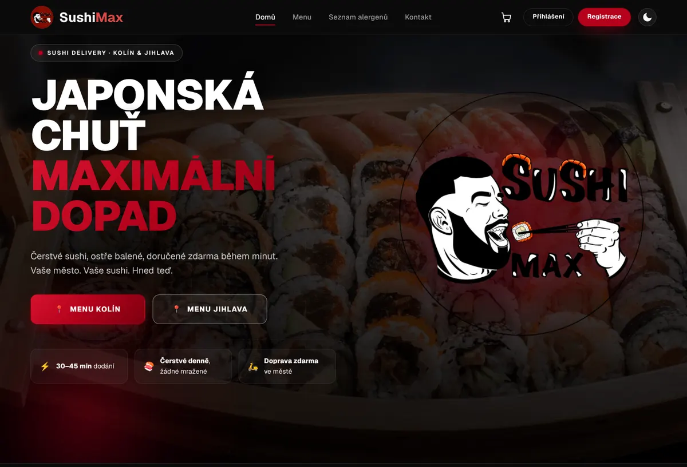
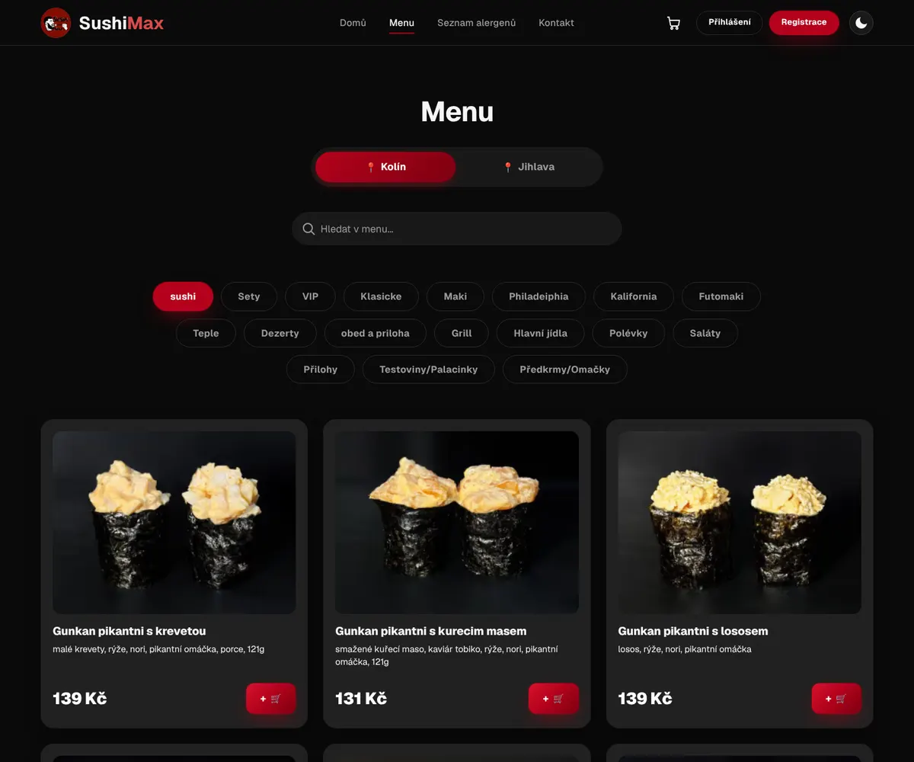
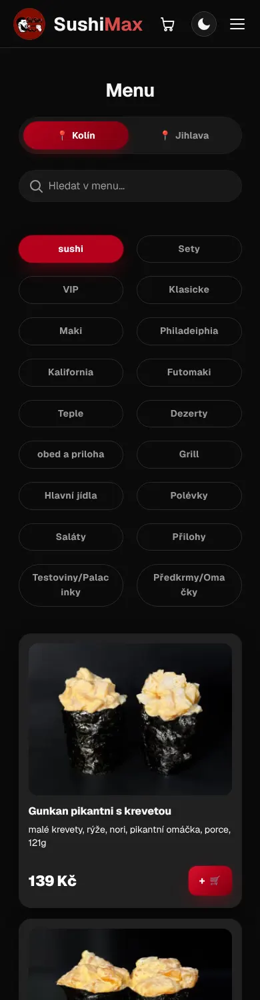
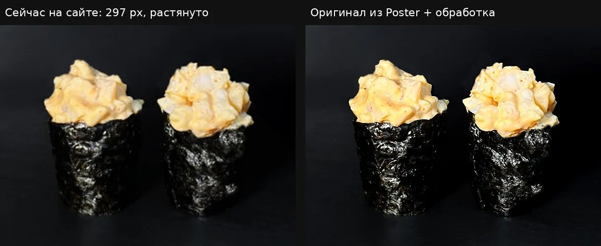

Разбор sushimax.cz и новый сайт
Что есть на сайте сейчас, что мешает клиенту заказать, и что изменено в концепте. Все цифры взяты с живого сайта и из его API 10 октября 2026.
Открыть новый сайтБизнес в цифрах
| Филиал | Адрес | Телефон | Часы |
|---|---|---|---|
| Колин | Karlovo náměstí 72, 280 02 | 721 479 332 | ежедневно 10–22 |
| Йиглава | Úzká 635/1, 586 01 | 777 499 970 sushi.max.cz@gmail.com | ежедневно 10–22 |
Оплата картой Visa и Mastercard. У каждого филиала свои Instagram и Facebook. Меню ведётся в кассовой системе Poster, сайт берёт его через API /api/restaurants/{город}/menu.
Логотип: персонаж Макс, бородатый парень с роллом на палочках, в бордовом круге. По решению владельца он остаётся без изменений.
Как сайт выглядит сегодня
Сайт новый, на Next.js. В нём уже есть выбор города, корзина и аллергены. Дизайн тёмный с красным. Основа правильная, но путь до заказа длинный, а меню неудобно смотреть.



Что мешает заказать
Главная не продаёт
На первом экране слоган «Japonská chuť, maximální dopad» и две кнопки городов. Блюд, цен и сетов нет. Чтобы увидеть еду, нужно сделать минимум два перехода.
В концепте: под первым экраном сразу идут сеты с ценами, а в углу карточка «Сет недели».
Меню сложно листать
18–20 категорий выведены кнопками в несколько рядов. На телефоне они занимают целый экран, а блюда видно только после прокрутки. Каждая карточка размером с экран, так что 294 блюда — это 294 экрана. Сначала открывается категория «sushi» (гунканы), а не сеты, которые продаются лучше всего. Блюда подгружаются по 9 штук.
В концепте: одна прилипающая строка категорий, которая подсвечивает раздел при прокрутке. На телефоне блюда идут компактными строками с фото слева. Поиск ищет по всему меню сразу.
Фото мутные
Сайт показывает копии из Poster шириной 297 px и растягивает их до 400 px и больше. В Poster при этом лежат оригиналы около 1000 px. Фото к тому же разной формы: горизонтальные, квадратные и вертикальные.
В концепте: все 608 фото взяты в оригинале и обработаны одинаково: формат 4:3, лёгкая резкость и контраст, WebP. Одинаковые файлы хранятся один раз, получилось 588 фото и 24 МБ.

Названия с ошибками
В Колине у 210 из 294 названий нет чешской диакритики: «Gunkan pikantni s kurecim masem». Слово «kuřecí» написано пятью способами. Категория называется «Philadeiphia». Встречаются опечатки: «locosem», «ploby», «japonká», «rodzinkama», «krevrtou». Часть названий набрана капслоком. В одном коктейле осталось слово по-русски: «Modrá laguna (голубая лагуна)». У одних и тех же категорий в двух городах разные названия: «Klasicke» и «Roly», «Teple» и «Teplí rolky».
В концепте: скрипт tools/build_menu.py исправляет это автоматически при каждой выгрузке меню, категории обоих городов приведены к общим названиям. Но лучше один раз поправить названия в Poster: тогда и чеки будут без ошибок.
Не видно граммовки и количества штук
В Колине у 236 из 294 позиций пустое поле веса. У сетов количество штук и вес спрятаны в конце описания («1300g 40ks»), а сайт показывает их как текст. Для сетов это главный вопрос: на сколько человек хватит.
В концепте: вес и штуки достаются из описаний, теперь они есть у 489 позиций из 608. У сетов дополнительно показана цена за штуку, например «Set Sakura · 40 шт · 19 Kč за штуку».
Главная кнопка — регистрация
Ярко-красная кнопка в шапке — «Registrace», а не корзина и не «Заказать». Иконка корзины не показывает сумму. Для доставки еды регистрация только мешает: людям нужен заказ за минуту.
В концепте: красная кнопка в шапке — это корзина с суммой. Заказ без регистрации. На телефоне внизу закреплена кнопка корзины с количеством и суммой.
Старые ссылки ведут на 404
Google всё ещё выдаёт адреса старого сайта: /produkt/favorite, /menu/sety, поддомен jihlava.sushimax.cz. Сейчас они открывают «Stránka nenalezena» или вообще не отвечают. Адрес /kolin ведёт на главную, а не в меню Колина. Нет robots.txt, sitemap.xml, картинки для превью ссылки и разметки ресторана для Google.
Это следующий этап (SEO), сделаем отдельно.
Логотип теряется в шапке
Логотип подробный, а в шапке стоит размером 48 px: Макса и надпись SUSHI MAX не разглядеть. Рядом ещё раз написано «SushiMax» другим шрифтом. На первом экране тот же логотип повторён огромным кругом.
В концепте: логотип прежний, но всегда стоит в полном круге и с отступом. Крупно он появляется там, где у человека есть время на него посмотреть: в окне выбора города, в пустой корзине и на экране «Спасибо за заказ».
Noir Cinema: ночной Токио
Чёрный и красный, как у бренда сейчас, но с характером кино: чисто чёрный фон, красный работает как свет (свечение, неоновая линия, подсветка при наведении), огромные контурные буквы SUSHIMAX, узкий высокий шрифт в верхнем регистре, бегущие ленты «45 minut ✦ doprava zdarma». Фото Йиглавы сняты на чисто чёрном фоне, поэтому сет на первом экране «висит» прямо в воздухе, без рамки. Сеты показаны как витрина с крупными номерами 01, 02, 03.
Шрифты
Оба шрифта бесплатные (Google Fonts) и поддерживают чешскую диакритику и украинскую кириллицу.
Было и стало
| Было | Стало |
|---|---|
| Город выбирается кнопкой на главной или в меню | При первом заходе спрашиваем город и запоминаем его. Меню, цены, телефон и адрес подставляются сами |
| Слоган и пустой первый экран | Сет недели в центре экрана на фоне огромных букв SUSHIMAX, статус «открыто до 22:00», «45 min», доставка 0 Kč, кнопки «Заказать» и «Позвонить», бегущие ленты с главным |
| Сеты — одна из 18 категорий | Блок сетов сразу под первым экраном: штуки, вес, количество видов роллов, цена за штуку |
| Нет | Метки «Хит» и «Новинка». Новинки определяются автоматически по дате загрузки фото в Poster. Хиты сейчас для примера, нужен настоящий список от владельца |
| Обеды Йиглавы спрятаны в категории «Obéd» | Отдельный блок «Обеденное меню от 150 Kč», виден только для Йиглавы |
| Корзина без допродажи | «К суши подойдёт»: соусы, имбирь, напитки в один клик, только то, что есть в меню города |
| Вечером заказать нельзя | Предзаказ: когда закрыто, сайт так и говорит и предлагает время доставки на завтра |
| Каждый раз собирать заказ заново | «Повторить заказ»: прошлая корзина запоминается в браузере, без регистрации |
| Только чешский | CZ, UA, EN для интерфейса. Названия блюд остаются чешскими |
Что уточнить перед запуском
- Хиты продаж: 5–10 позиций из отчёта Poster.
- Зоны доставки и минимальная сумма заказа, есть ли самовывоз.
- Наличные: принимает ли курьер наличные или только карту.
- Адрес Колина: на сайте Karlovo náměstí 72, в реестре Zámecká 82. Какой правильный?
- Аллергены по блюдам, если они есть в техкартах.
- Цены по городам: 10 одинаковых блюд стоят по-разному (например, Fitness rolka 239 и 297 Kč). Так задумано?
- Фото для первого экрана из Higgsfield, промпты в
higgsfield-prompts.md.
Следующие шаги
- Вставить кадры из Higgsfield на первый экран и в блок доставки.
- SEO: отдельные адреса /kolin и /jihlava, перенаправления со старых ссылок, sitemap, разметка ресторана и меню для Google.
- Подключить настоящую отправку заказа (в Poster или в Telegram филиала).